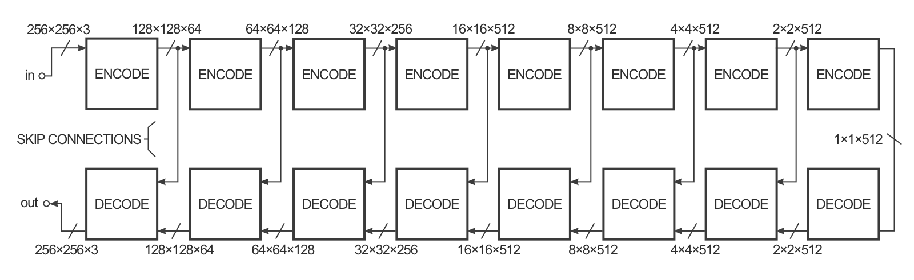
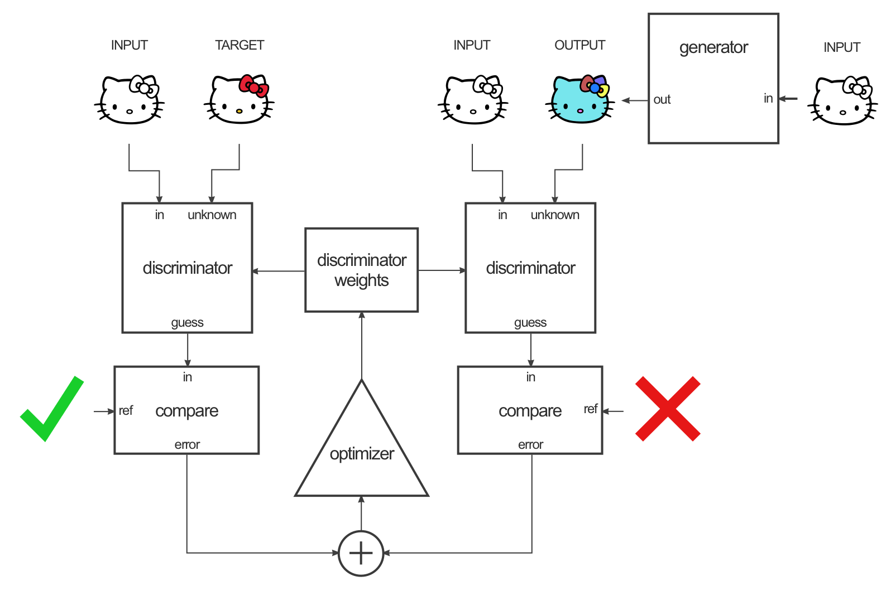

Generative adversarial networks
Generative adversarial networks
Generative models
An autoencoder learns to first encode inputs in a latent space and then use a generative model to model the data distribution.
\mathcal{L}_\text{autoencoder}(\theta, \phi) = \mathbb{E}_{\mathbf{x} \in \mathcal{D}, \mathbf{z} \sim q_\phi(\mathbf{z}|\mathbf{x})} [ - \log p_\theta(\mathbf{z})]
Couldn’t we learn a decoder using random noise as input but still learning the distribution of the data?
\mathcal{L}_\text{GAN}(\theta, \phi) = \mathbb{E}_{\mathbf{z} \sim \mathcal{N}(0, 1)} [ - \log p_\theta(\mathbf{z}) ]
After all, this is how random numbers are generated: a uniform distribution of pseudo-random numbers is transformed into samples of another distribution using a mathematical formula.

The problem is how to estimate the discrepancy between the true distribution and the generated distribution when we only have samples. The Maximum Mean Discrepancy (MMD) approach allows to do that, but does not work very well in highly-dimensional spaces.

Architecture of a GAN
The Generative Adversarial Network (GAN, (Goodfellow et al., 2014)) is a smart way of providing a loss function to the generative model. It is composed of two parts:
- The Generator (or decoder) produces an image based on latent variables sampled from some random distribution (e.g. uniform or normal).
- The Discriminator has to recognize real images from generated ones.

The generator and the discriminator are in competition with each other. The discriminator uses pure supervised learning: we know if the input is real or generated (binary classification) and train the discriminator accordingly. The generator tries to fool the discriminator, without ever seeing the data!

GAN loss
Let’s define x \sim P_\text{data}(x) as a real image from the dataset and G(z) as an image generated by the generator, where z \sim P_z(z) is a random input. The output of the discriminator is a single sigmoid neuron:
- D(x) = 1 for real images.
- D(G(z)) = 0 for generated images
The discriminator wants both D(x) and 1-D(G(z)) to be close from 1, so the goal of the discriminator is to minimize the negative log-likelihood (cross-entropy) of classifying correctly the data:
\mathcal{L}(D) = \mathbb{E}_{x \sim P_\text{data}(x)} [ - \log D(x)] + \mathbb{E}_{z \sim P_z(z)} [ - \log(1 - D(G(z)))]
It is similar to logistic regression: x belongs to the positive class, G(z) to the negative class.
The goal of the generator is to maximize the negative log-likelihood of the discriminator being correct on the generated images, i.e. fool it:
\mathcal{J}(G) = \mathbb{E}_{z \sim P_z(z)} [ - \log(1 - D(G(z)))]
The generator tries to maximize what the discriminator tries to minimize.
Putting both objectives together, we obtain the following minimax problem:
\min_G \max_D \, \mathcal{V}(D, G) = \mathbb{E}_{x \sim P_\text{data}(x)} [\log D(x)] + \mathbb{E}_{z \sim P_z(z)} [\log(1 - D(G(z)))]
D and G compete on the same objective function: one tries to maximize it, the other to minimize it. Note that the generator G never sees the data x: all it gets is a backpropagated gradient through the discriminator:
\nabla_{G(z)} \, \mathcal{V}(D, G) = \nabla_{D(G(z))} \, \mathcal{V}(D, G) \times \nabla_{G(z)} \, D(G(z))
It informs the generator which pixels are the most responsible for an eventual bad decision of the discriminator.
This objective function can be optimized when the generator uses gradient descent and the discriminator gradient ascent: just apply a minus sign on the weight updates!
\min_G \max_D V(D, G) = \mathbb{E}_{x \sim P_\text{data}(x)} [\log D(x)] + \mathbb{E}_{z \sim P_z(z)} [\log(1 - D(G(z)))]
Both can therefore use the usual backpropagation algorithm to adapt their parameters. The discriminator and the generator should reach a Nash equilibrium: they try to beat each other, but both become better over time.

Variants
DCGAN (Radford et al., 2015) is the convolutional version of GAN, using transposed convolutions in the generator and concolutions with stride in the discriminator.


GAN are quite sensible to train: the discriminator should not become too good too early, otherwise there is no usable gradient for the generator. In practice, one updates the generator more often than the discriminator. There has been many improvements on GANs to stabilizes training (see (Salimans et al., 2016)):
- Wasserstein GAN (relying on the Wasserstein distance instead of the log-likelihood) (Arjovsky et al., 2017).
- f-GAN (relying on any f-divergence) (Nowozin et al., 2016).
But the generator often collapses, i.e. outputs non-sense, or always the same image. Hyperparameter tuning is very difficult.
StyleGAN2 from NVIDIA (Karras et al., 2020) is one of the most realistic GAN variant. Check its generated faces at https://thispersondoesnotexist.com/.
Conditional GANs
cGAN
The generator can also get additional deterministic information to the latent space, not only the random vector z. One can for example provide the label (class) in the context of supervised learning, allowing to generate many new examples of each class: data augmentation using a conditional GAN (Mirza and Osindero, 2014). One could also provide the output of a pre-trained CNN (ResNet) to condition on images.


pix2pix
cGAN can be extended to have an autoencoder-like architecture, allowing to generate images from images. pix2pix (Isola et al., 2018) is trained on pairs of similar images in different domains. The conversion from one domain to another is easy in one direction, but we want to learn the opposite.

The goal of the generator is to convert for example a black-and-white image into a colorized one. It is a deep convolutional autoencoder, with convolutions with strides and transposed convolutions (SegNet-like).


In practice, it has a U-Net architecture with skip connections to generate fine details.

The discriminator takes a pair of images as input: input/target or input/generated. It does not output a single value real/fake, but a 30x30 “image” telling how real or fake is the corresponding patch of the unknown image. Patches correspond to overlapping 70x70 regions of the 256x256 input image. This type of discriminator is called a PatchGAN.


The discriminator is trained like in a regular GAN by alternating input/target or input/generated pairs.

The generator is trained by maximizing the GAN loss (using gradients backpropagated through the discriminator) but also by minimizing the L1 distance between the generated image and the target (supervised learning).
\min_G \max_D V(D, G) = V_\text{GAN}(D, G) + \lambda \, \mathbb{E}_\mathcal{D} [|T - G|]

CycleGAN : Neural Style Transfer
The drawback of pix2pix is that you need paired examples of each domain, which is sometimes difficult to obtain. In style transfer, we are interested in converting images using unpaired datasets, for example realistic photographies and paintings. CycleGAN (Zhu et al., 2020) is a GAN architecture for neural style transfer.


Let’s suppose that we want to transform domain A (horses) into domain B (zebras) or the other way around. The problem is that the two datasets are not paired, so we cannot provide targets to pix2pix (supervised learning). If we just select any zebra target for a horse input, pix2pix would learn to generate zebras that do not correspond to the input horse (the shape may be lost). How about we train a second GAN to generate the target?

Cycle A2B2A
- The A2B generator generates a sample of B from an image of A.
- The B discriminator allows to train A2B using real images of B.
- The B2A generator generates a sample of A from the output of A2B, which can be used to minimize the L1-reconstruction loss (shape-preserving).

Cycle B2A2B
In the B2A2B cycle, the domains are reversed, what allows to train the A discriminator.

This cycle is repeated throughout training, allowing to train both GANS concurrently.